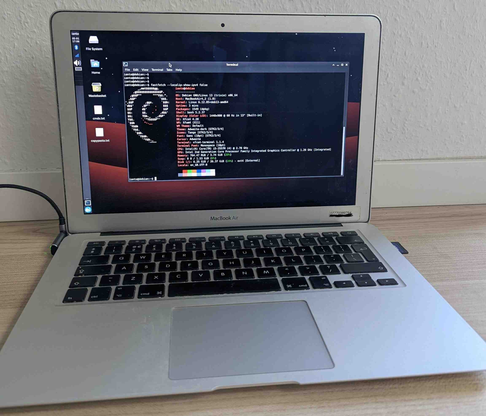

Guestbook
Guestbook server is unreachable

- A 2011 Macbook Air is used as the server for this guestbook.
- It runs Debian Linux with XFCE and i3 as the desktop environments.
- Since the internal SSD no longer works, a 32GB SD card is used as boot drive.
- The full-stop and comma keys were damaged by a tea spill. These are remapped using Xmodmap to caps lock and plus-minus keys, which I don't use anyway.
- The web stack consists of a PHP-based API, Nginx handling HTTP requests, and SQLite for storing guestbook comments.
- A Cloudflare tunnel is used to securely expose the API to the internet.
- Vim is my text editor of choice.
- Be nice in the comments and please don't hack me.
Could not load messages. Try again later.